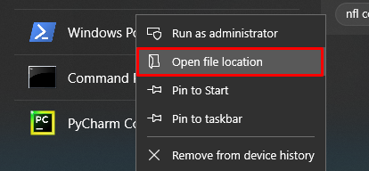
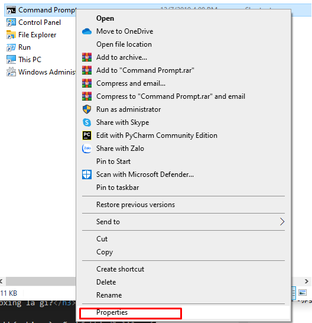
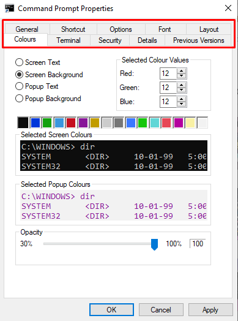
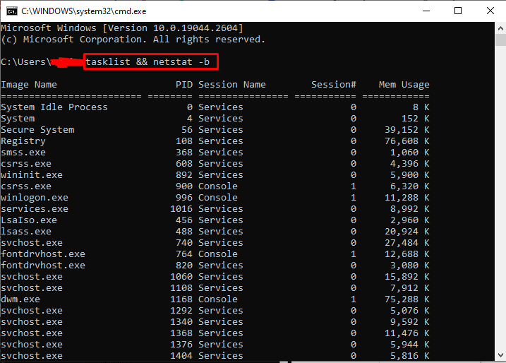
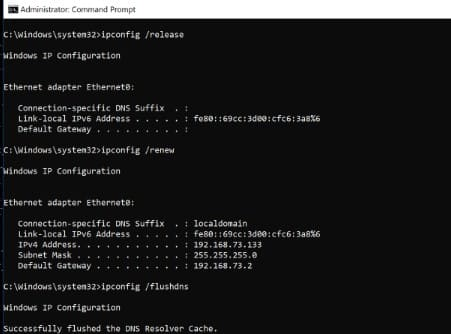

CMD là gì?
- - Command Prompt là công cụ dòng lệnh quen thuộc trên Windows, bạn có thể dùng nó gỡ bỏ ứng dụng UWP, sửa chữa lỗi hệ thống,…
- Cmd (viết tắt của Command Prompt) là một ứng dụng dòng lệnh có sẵn trong hầu hết các hệ điều hành Windows.
- Nó được sử dụng để thực hiện các lệnh đã nhập.
- Hầu hết các lệnh đó tự động hóa các tác vụ thông qua tập lệnh và tệp hàng loạt, thực hiện các chức năng quản trị nâng cao và khắc phục sự cố hoặc giải quyết một số loại sự cố Windows nhất định.
- Command Prompt được gọi chính thức là Windows Command Processor, nhưng đôi khi nó cũng được gọi là Command Shell hoặc CMD Prompt, hoặc thậm chí bằng tên tệp của nó, cmd.exe.
- Command Prompt đôi khi được gọi không chính xác là “dấu nhắc DOS” hoặc là MS-DOS.
- Command Prompt là một chương trình Windows mô phỏng nhiều khả năng dòng lệnh có sẵn trong MS-DOS, nhưng nó không phải là MS-DOS.
- CMD cũng là chữ viết tắt của nhiều thuật ngữ công nghệ khác như phân phối tin nhắn tập trung, hiển thị màn hình màu và cơ sở dữ liệu quản lý chung, nhưng không có gì liên quan đến Command Prompt.
Dừng lệnh đang chạy trên CMD
-
- Khi bạn muốn dừng một lệnh đang hoạt động trên CMD hãy nhấn:
Ctrl + C
- Lệnh này sẽ hũy tất cả những thao tác đang có trên CMD và cho phép bạn bắt đầu một lệnh khác.
- Nhập lệnh cls xóa sạch những gì hiển thị trong cửa sổ CMD.
-
Menu cài đặt Command Prompt
- 1. Chuột phải vào Cmd > Open file location.
-
 - 2. Chuột phải vào icon cmd > Properties.
-
 - 3. Đây là menu cài đặt Command Prompt, bạn có thể thay đổi font, color, title... theo sở thích cá nhân.
-

-
Phím tắt trong Command Prompt
-
1. Nhấn phím mũi tên lên ↑ hoặc xuống ↓ trên bàn phím, để hiển thị lại các lệnh mà bạn vừa nhập trước đó.
2. Ctrl + M: Bật chế độ Mark mode, cho phép bạn di chuyển con trỏ đến bất kì đâu bằng phím mũi tên.
3. Ctrl + C hoặc V: Kể từ Windows 10, bạn có thể sao chép và dán văn bản trên cmd.
4. Ctrl + F: Cho phép bạn tìm kiếm văn bản nhưng chỉ làm được trên Windows 10.
5. Ctrl + Shift + Cuộn chuột: Tăng hoặc giảm độ trong suốt của cmd, có thể thay cuộn thuột bằng phím + và -.
6. Alt + Enter: Bật chế độ toàn màn hình và không hiển thị thanh tiêu đề, có thể thay bằng F11.
7. Kéo và thả thư mục để chèn đường dẫn
- Ngoài việc có thể sao chép, dán văn bản và tab các thư mục, bạn có thể kéo và thả trực tiếp các thư mục vào cmd để tự động chèn đường dẫn. Tiện nhỉ, hồi đó gõ đường dẫn mỏi tay vãi các bác ạ, copy các kiểu, sau này mới biết tới open cmd here, cái này còn tiện hơn cái đó nữa.
F1: Nhấn hoặc giữ phím này sẽ gõ lại từng chữ của lệnh mà bạn vừa nhập.
F2: Sao chép lệnh vừa nhập cho đến kí tự đầu tiên được chỉ định.
F3: Nhập lại dòng lệnh trước đó mà bạn vừa nhập.
F4: Đảo ngược của F2 – tự động xoá đến kí tự được chỉ định tính từ vị trí con trỏ, ví dụ: Anonyviet, con trỏ đang ở chữ A, nhấn F4 và nhập v, dòng lệnh giờ sẽ còn viet.
F5: Lùi lại các lệnh mà bạn đã nhập, giống phím mũi tên.
F6: Chèn Ctrl + Z (^Z) trong cmd, những gì đằng sau dấu này sẽ được bỏ qua.
F7: Mở danh sách cho phép bạn chọn các lệnh đã nhập trước đó.
F8:Hoạt động tương tự như F5 nhưng không dừng lại ở cuối lịch sử lệnh. Khi ở cuối lịch sử, nó sẽ quay về lệnh ban đầu và tiếp tục.
F9: Cho phép bạn nhập lại lệnh trước đó bằng cách nhập số thứ tự của lệnh.
-
Nhập nhiều lệnh cùng một lúc
-
- Thêm && giữa các lệnh sẽ cho phép bạn nhập nhiều lệnh cùng một lúc để được thực thi liên tiếp.
Ví dụ: tasklist && netstat -b
-
Xem các tác vụ đang chạy và hiển thị thông tin kết nối mạng
- - Lệnh tasklist sẽ liệt kê tất cả các tác vụ đang chạy trên máy tính của bạn cùng với các chi tiết như mã nhận dạng quy trình và mức sử dụng bộ nhớ của chúng, trong khi netstat -b sẽ tạo ra danh sách tất cả các tác vụ có kết nối mạng.
-

-
Liệt kê mọi trình điều khiển thiết bị trên PC của bạn (Driver)
-
- Có nhiều cách để tạo danh sách các trình điều khiển thiết bị trong cmd.
- Câu lệnh dưới đây bao gồm thông tin bổ sung như trạng thái của trình điều khiển thiết bị và vị trí thư mục – tên file được liên kết:
driverquery /v
- Hậu tố /v để show mở rộng.
- Bạn có thể lưu kết quả của lệnh như danh sách tác vụ hoặc trình điều khiển vào tệp văn bản mới bằng cách thêm “>” cộng với đường dẫn muốn lưu.
Ví dụ:
driverquery > C:\Users\Nghiadu03\Desktop\output.txt
Xoá các tập tin tạm thời trong ổ đĩa
- Một số file tạm trên ổ đĩa của bạn có thể bị xoá bằng các lệnh sau ( /q bỏ qua các yêu cầu xác nhận, /f bỏ qua thuộc tính chỉ đọc và xoá chúng, /s xoá nội dung trong các thư mục con).
- Xoá các tệp người dùng tạm thời:
del /q /f /s %temp%\*
- Xoá các tệp hệ thống tạm thời (yêu cầu quyền admin):
del /s /q C:\Windows\temp\*
- Hoặc bạn cũng có thể chạy cùng lúc 2 lệnh:
del /q /f /s %temp%\* && del /s /q C:\Windows\temp\*
- Nếu không đủ dung lượng lưu trữ, thì đây là mọt giải pháp tốt giúp tối ưu hệ thống và không gian lưu trữ.
- Ngoài ra còn có các cách khác để giải phóng dung lượng trên Windows, bao gồm các phương pháp Cmd để khởi chạy Disk Cleanup nâng cao và một cách khác để tắt chế độ ngủ đông bách cách xoá tệp hệ thống hiberfil.sys.
Mở bàn phím ảo
- Lệnh osk sẽ mở bàn phím ảo trên màn hình Windows, cho phép bạn ấn phím bằng chuột thay vì gõ tay.
Hẹn giờ tắt máy tính
- Lệnh shutdown có thể được sử dụng để tắt, khởi động lại,… bao gồm cả việc buộc các ứng dụng mà bạn ghét phải tắt, hiện thị thông báo khi tắt máy và chỉ định số giây bạn muốn hẹn giờ tắt máy.
Ví dụ: shutdown -s -f -t 3600, sẽ tắt PC của bạn sau 3600s – 1 giờ.
- Dùng lệnh shutdown -a để huỷ lệnh.
Tạo điểm truy cập Wifi và xem mật khẩu Wifi
- Nếu card wifi của bạn hỗ trợ tính năng này, bạn có thể biến PC của mình thành một điểm phát wifi công cộng từ Cmd.
- Kiểm tra xem phần cứng của bạn có hỗ trợ tính năng này hay không:
netsh wlan show drivers và tìm dòng có nội dung “Hosted network support: Yes”.
- Bạn có thể tạo điểm phát sóng bằng lệnh:
netsh wlan set hostednetwork mode=allow ssid=YOURSSID key=YOURPASSWORD (YOURSSID là tên điểm phát sóng, còn YOURPASSWORD là mật khẩu)
- Để kích hoạt điểm phát sóng, ta dùng lệnh:
netsh wlan start hostednetwork
để tắt điểm phát sóng bạn thay từ “start” thành “stop” và bạn có thể kiểm tra trạng thái của điểm phát sóng của mình bằng lệnh netsh wlan show hostednetwork.
- Bạn cũng có thể bật chia sẻ kết nối thông qua menu GUI.
- Vào Network and Sharing > Change adapter settings hoặc truy cập vào Control Panel > Network and Internet > Network Connections và bạn có thể thấy adapter mạng được kết nối với PC của bạn.
- Phải chuột vào thiết bị được kết nối với Internet và chọn Properties. Trong tab Sharing, click vào phần “Allow other network users to connect through this computer’s Internet connection.”
- Để hiển thị mật khẩu Wifi của bạn, nhập lệnh netsh WLAN show profile name=YOURPROFILE key=clear (thay “YOURPROFILE” bằng tên wifi mà bạn muốn biết mật khẩu).
- Lệnh này sẽ xoá mạng mà bạn không sử dụng: netsh WLAN delete profile name=YOURPROFILE
Tạo báo cáo về hệ thống của bạn
- Các bảng báo cáo này vô cùng chi tiết và có thể giúp ta hiểu được các vấn đề liên quan đến mức tiêu thụ điện năng hoặc các kết nối không dây trên hệ thống của bạn
- powercfg /energy: Tạo một báo cáo về hiểu quả năng lượng của hệ thống, vị trí của báo cáo sẽ được hiển thị khi lệnh kết thúc.
- powercfg /batteryreport: Tạo một bản báo cáo thông số kỹ thuật cho pin của bạn, cũng như số liệu thống kê và biểu đồ về lịch sử sử dụng pin.
- netsh wlan show wlanreport: Tạo bản báo cáo thông số kĩ thuật về lịch sử kết nối không dây của bạn.
-
Lệnh khắc phục nhanh các sự cố kết nối mạng
-
- Bạn gặp sự cố với kết nối mạng? Đừng lo, đã có ipconfig luôn đồng hành bên bạn:
- ipconfig /release: hiện thị địa chỉ IP cục bộ hiện tại của bạn.
- ipconfig /renew: Tạo địa chỉ Ip cục bộ mới.
- ipconfig /flushdns: Xoá cache DNS.
-

- Đối với các vấn đề xảy ra với kết nối máy tính, ta cần dùng tới một số lệnh khá phức tạp để giải quyết nó.
- Lưu ý rằng bạn có thể phải cấu hình lại adapter của mình.
- Nếu bạn cài đặt thủ công, đặc biệt là khi reset TCP/IP và tường lửa của Windows.
- Tất cả các lệnh dưới đây đều yêu cầu khởi động lại Windows.
- netsh winsock reset: Đặt lại winsock về trạng thái mặc định, loại bỏ các cài đặt của nhà cung cấp dịch vụ, netsh winsock show catalog để hiện thị các cài đặt này.
- netsh int ip resetall: Xoá và cài đặt lại TCP/IP, viết lại một vài associated registry keys (khoá đăng ký) liên quan.
- netsh advfirewall reset: Khôi phục lại tường lửa về mặc định, xoá các cài đặt cấu hình trước đó.
- nbtstat -r: Xoá bộ nhớ đệm NetBIOS và tải lại các mục được gắn thẻ #PRE từ tệp Lmhosts.
- nbtstat -rr: Khởi động lại NetBIOS cho máy tính đã được đăng ký với máy chủ WINS.
Khắc phục nhanh các sự cố khởi động
- Vào một buổi sáng đẹp trời khi mới chia tay người yêu.
Bạn bật PC của mình lên với mong muốn tìm được vài bộ phim để giải toả áp lực với thằng em út trong gia đình.
Nhưng khi máy vừa bật lên thì thông báo hiện ra “reboot and select proper boot device?” hoặc “NTLDR is missing”.
Những phương pháp dưới đây sẽ giúp bạn sửa chữa nhanh chóng vấn đề để tiếp tục tìm phim hoặc dùng điện thoại để làm việc đó, tuỳ bạn vậy hihi.
- Lưu ý: Những lệnh này được thực hiện trong môi trường khôi phục, chẳng hạn như từ USB boot Windows 10.
- bootrec /fixmbr
- bootrec /fixboot
- bootrec /scanos
- bootrec /rebuildbcd
- Trong quá khứ, các lệnh đó hoạt động rất trơn tru.
- Nhưng khi mình thử nghiệm trên máy ảo bằng cách xoá phân vùng của hệ thống và cố gắng khôi phục bằng cách nhập các dòng đó.
- Thì thật không may, quyền truy cập đã bị từ chối khi mình nhập lệnh bootrec /fixboot và mình không thể tìm thấy cách giải quyết, vì vậy Windows vẫn không thể khởi động được.
- Nhưng đó là chuyện của quá khứ, các lệnh bcdboot và bootect giờ đây đã hoạt động để khởi động lại Windows, mặc dù mình chỉ định dạng lại phân vùng hệ thống:
- bcdboot C:\Windows: Tạo lại các tệp phân vùng hệ thống được sao chép từ C:\Windows. Mặc dù định dạng này hoạt động từ bên trong Windows, xem ghi chú bên dưới về việc chạy lệnh này từ bảng điều khiển khôi phục bên ngoài Windows.
- bootsect /nt60 SYS /mbr: Viết lại mã khởi động chính trên phân vùng hệ thống và cập nhật bản ghi khởi động chính.
- *Note: Nếu bạn chạy bcdboot C:\Windows từ bảng điều khiển khôi phục bên ngoài cài đặt Windows và xảy ra lỗi thì bạn phải xem phân vùng cài Windows của mình nằm ở ổ đĩa nào, vì khi bạn chạy lệnh ở môi trường này, tên các ổ đĩa sẽ bị xáo trộn.
- Lệnh diskpart sẽ liệt kê và hiển thị dung lượng ổ đĩa để bạn có thể biết đâu là ổ cài Windows (gõ exit để đóng diskpart).
- Để chạy bcdboot từ môi trường hồi phục bạn nhập lệnh: D:\Windows /s C:\
Chú thích:
- Master Boot Record: Khu vực được tạo ra đầu tiên trên ổ đĩa và chứa bộ khởi động cũng như thông tin về các phân vùng trên ổ đĩa.
- Volume Boot Record hay còn được gọi là Partition Boot Sector/System Partition (Phân vùng khởi động/Phân vùng hệ thống) trong thuật ngữ MS. Khu vực chứa thông tin để tải hệ điều hành.
Mã hoá, nén hoặc sao lưu tệp tin
- Các tệp và thư mục có thể được mã hoá hoặc nén và sẽ không thể giải nén một cách nhanh chóng được.
- Thay đổi đường dẫn theo máy bằng cách vào file và ghi cmd để mở tại cây thư mục cần lấy, file ẩn là DS.txt theo hình dưới.
- Giải mã: cipher /d C:\Users\nghia\OneDrive\Desktop>
- Nén: compact /c /s:C:\Users\nghia\OneDrive\Desktop>
- Giải nén: compact /u /s:C:\Users\nghia\OneDrive\Desktop>
- Bạn có thể sao lưu cây thư mục bằng cách sử dụng robocopy (Xem hướng dẫn tại Microsoft).
robocopy C:\source M:\destination /MIR /FFT /R:3 /W:10 /Z /NP /NDL